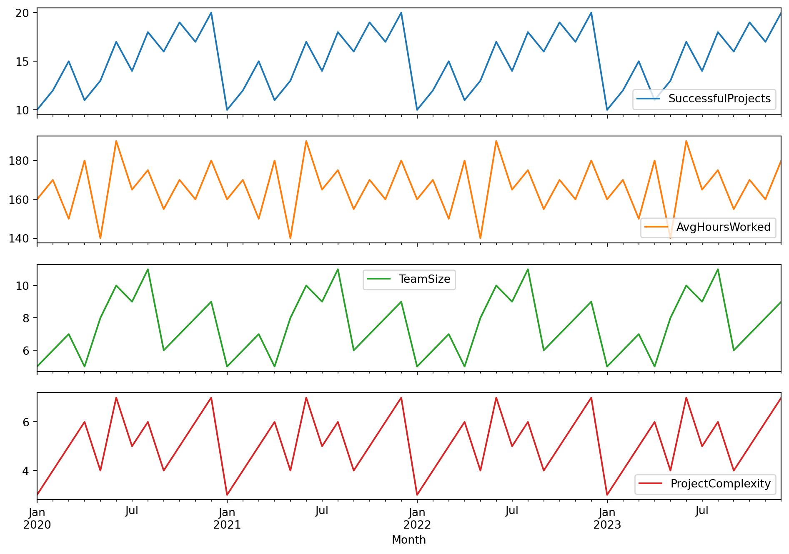
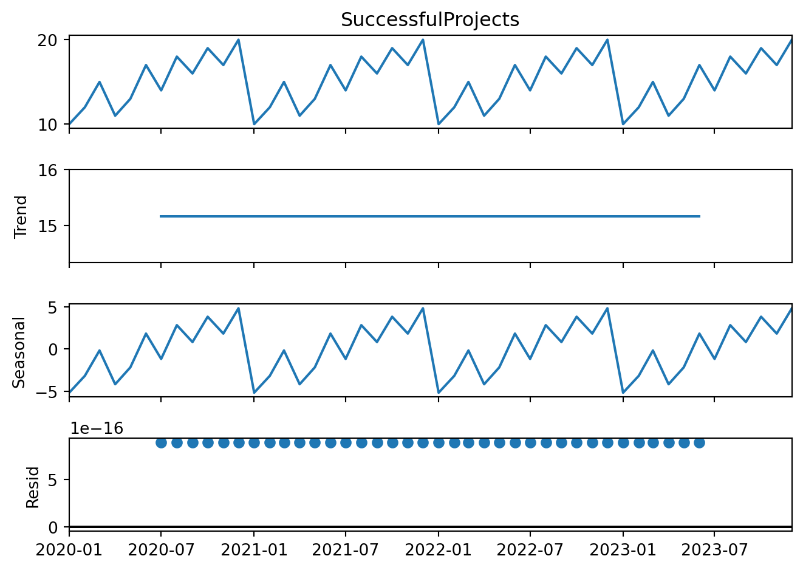

df.set_index('Month', inplace=True)# Plotting the datadf.plot(figsize=(12, 8), subplots=True)plt.show()# Decompose the time series (for successful projects only, for simplicity)decomposition = seasonal_decompose(df['SuccessfulProjects'], model='additive')fig = decomposition.plot()plt.show()


Model Building
Code
from statsmodels.tsa.statespace.sarimax import SARIMAX# Suppress specific warningswarnings.filterwarnings("ignore", message="no frequency information was provided")# Splitting the data into training and testing setstrain = df[:'2022']test = df['2023':]# Building the ARIMAX model with adjustments to improve convergencemodel = SARIMAX( train['SuccessfulProjects'], exog=train[['AvgHoursWorked', 'TeamSize', 'ProjectComplexity']], order=(1, 1, 1), enforce_stationarity=False, enforce_invertibility=False)model_fit = model.fit(disp=False, maxiter=500, method='nm')# Summary of the modelprint(model_fit.summary())# Forecastingforecast = model_fit.get_forecast(steps=len(test), exog=test[['AvgHoursWorked', 'TeamSize', 'ProjectComplexity']])forecast_df = test.copy()forecast_df['Forecast'] = forecast.predicted_mean# Plotting the actual vs forecasted valuesplt.figure(figsize=(12, 8))plt.plot(train['SuccessfulProjects'], label='Training Data')plt.plot(test['SuccessfulProjects'], label='Actual Data')plt.plot(forecast_df['Forecast'], label='Forecasted Data', linestyle='--')plt.title('Project Success Forecast with Additional Variables')plt.xlabel('Date')plt.ylabel('Number of Successful Projects')plt.legend()plt.show()